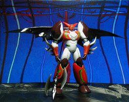

海洋堂 真ゲッター１ XEBEC VICTORY ACTION FIGURES

海洋堂 ヴィクトリーＡＦ 真ゲッター１です。これまた《キュベレイ》《ガンキャノン》と同じく「思い出」の機体です。ただし、精神分裂病時に買ったのは実際にはアオシマ スカイネットのプラモデルのほうです。 そのプラモデルはまったく着色されておらず白い樹脂がムキだしになっていました。それが真ゲッターの持つ生物兵器的というかナノマシン兵器的なイメージと重なって、ずっと見つめていると何がしかの象徴的変化を感じられると、そのときは真剣に考えていました。 私は《客観的な症状》に書いたように体感幻覚はありましたが、幻聴や幻視についてはっきりした症状がないこともあり、結局、そのような変化を感じることができませんでした。 精神が正常であれば、変化しないのはあたり前である、というか、そういうことすら考えないのですが、そのときはなぜ変化しないのかで悩みました。わずかであっても奇跡が生じるべきだったからです。 塗料がほこりのように雑誌の表紙の上を、ものすごくゆっくりですが動く、というような「弱い幻視」は見ていたので、そのような変化が置きないことに逆に「奇跡」としてのメッセージ性を見出していたわけです。 さて、この海洋堂のものは、正直あまりオススメできません。いくつかの関節が<b>回せる</b>のですが、ヒジやヒザが縦に回るだけで、遊べるのは羽の開閉と肩の回転ぐらいです。まぁ、それでかどうかは知りませんが、これは安価に手に入れることができたので、値段相応ということなのでしょう。カッコはよいので納得はしています。まともに可動したけりゃ最低 5000 円は覚悟しろってことなのでしょう。 背景は Winamp の MilkDrop プラグインを WinShot したものです。 更新：2006-04-03 初公開：2006年04月03日 02:52:13 最新版：2006年04月03日 02:55:04 Links: 海洋堂 ヴィクトリーＡＦ 真ゲッター１: http://www.j-hobby.com/kms_jpn/shop/prd_detail.asp?sku=vaf_af018 キュベレイ: http://jrf.cocolog-nifty.com/column/2006/02/post_1.html ガンキャノン: http://jrf.cocolog-nifty.com/column/2006/03/post_7.html アオシマ スカイネット: http://www.aoshima-bk.co.jp/skynet/ 客観的な症状: http://jrf.cocolog-nifty.com/column/2006/02/post_2.html MilkDrop: http://www.milkdrop.co.uk/ WinShot: http://www.woodybells.com/winshot.html